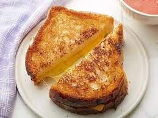

Homepage
Grilled Cheese Sammies

Easy, winter comfort food
Ingredients
4 slices of cheddar cheese
Steps
Spread the butter on each slice of bread.
Put 4 slices of the bread, butter side down on griddle.
Add a slice of cheese to each piece of bread.
Put the remaining 4 pieces of buttered bread, butter side up ontop of the cheese.
Frequently check the bottom bread. WHen it is toasted, flip the sandwhiches to toast the other side.
Serve with warm tomato soup.